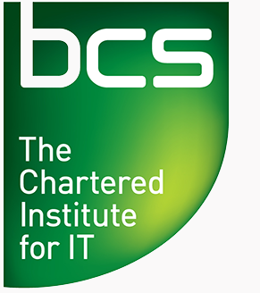

|
We are pleased to announce the first LLVM Cauldron, to be held on Thursday September 8th 2016 in Hebden Bridge, UK. This is the day before the GNU Tools Cauldron being held at the same venue, so we hope to take advantage of the high concentration of compiler enthusiasts and to encourage lots of cross-pollination between communities.
This will be a one-day conference with a single talks track and a space for breakout sessions, birds of a feather, and potentially tutorials. The meeting is free to attend and open to anyone whether a hobbyist, from academia, or from industry, and regardless of previous experience with LLVM.
The conference keynote will be delivered by Andy Wingo, maintainer of the Guile Scheme implementation and committer to V8 and SpiderMonkey. His talk will focus on compilation using persistent data structures, a technique used in Guile's intermediate language.
Much like the LLVM Developers' meetings, we believe the event will be of particular interest to the following people:
This inaugural LLVM Cauldron will form part of the Wuthering Bytes technology festival in Hebden Bridge in the UK. Situated at the heart of the UK's "Northern Powerhouse", Hebden Bridge is roughly equidistant from Liverpool, Manchester, Sheffield, Leeds and Bradford. The Wuthering Bytes festival is a 10 day celebration of all things technological that are free and open source.
We are incredibly grateful to our event sponsors:

The LLVM Cauldron is organised by:
Please contact asb@asbradbury.org if you have any issues or questions.
Talks
| Media | Topic |
|---|---|
|
Slides Video | Keynote: Optimizing with persistent data structures (Andy Wingo) |
|
Slides Video | LLV8: Adding LLVM as an extra JIT tier to V8 JavaScript engine (Dmitry Melnik) |
|
Slides Video | Using LLVM and Sulong for Language C Extensions (Chris Seaton) |
|
Slides Video | Scheduler for in-order processors - what's present and what's missing in LLVM? (Javed Absar) |
|
Slides Video | An Altruistic Processor - AAP (Simon Cook and Ed Jones) |
|
Slides Video | Syntax macros - a case study in extending Clang (Norman Rink) |
|
Slides Video | Accelerating Python code with Numba and LLVM (Graham Markall) |
|
Slides Video | How to add a new target to LLD (Peter Smith) |
Lightning talks
| Media | Topic |
|---|---|
|
Slides Video | Speeding up query execution in PostgreSQL using LLVM JIT (Dmitry Melnik) |
|
Slides Video | MyStorm (Ken Boak) |
|
Slides Video | Can we improve the experience of first-time LLVM contributors? (Alex Bradbury) |
|
Slides Video | AAPSim - Building a simulator using LLVM MC (Simon Cook) |
|
Slides (No video) | Generating Python & Ruby bindings from C++ (Jonathan B Coe) |
We're thrilled that Andy Wingo will be presenting the keynote on compilation with persistent data structures.
Our main track talks consist of:
Scheduler for in-order processors - what's present and what's missing
in LLVM?
Javed Absar - ARM Ltd
This talk will focus on developing instruction-scheduling
machine-models in LLVM for deeply-pipelined, in-order, multiple-issue
processors. While LLVM provides a neat Tablegen based interface for describing
the pipeline behavior of both in-order and out-of-order processors, during the
modelling phases we discovered that some hardware aspects of target processors
were much harder to model. The talk will first cover the features that were
relatively easy to capture such as issue-width, latency, forwarding and
resource-cycles. Then we will delve into aspects that turned out to be much
harder or contrived to model, such as - constraints on instructions issue;
in-stage forwarding, variadic instructions. The talk will then focus on
potential solutions to those problems.
An Altruistic Processor (AAP)
Simon Cook and Ed Jones - Embecosm
An Altruistic Processor (AAP) is an open hardware 16-bit architecture for
deeply embedded applications running on small FPGA devices. It is somewhat
configurable, with a minimum of 4 16-bit general registers, at least one
word-addressed code space of up to 16Mword and at least one byte addressed data
space of up to 64kbyte.
The primary role of AAP is as a testbench and vehicle for improvement for LLVM.
It encapsulates features found in a wide range of popular embedded processors
which traditionally cause difficulties for compiler writers.
In this talk we will discuss the motivation behind this project, our experience
implementing and testing LLVM for this architecture, the architectural features
unique to our processor and how these interact with LLVM. We will the on to
explaining our experiences with implementing AAPSim, an instruction set
simulator based on LLVM MC and how we have used this for compiler regression
testing.
LLV8: Adding LLVM as an extra JIT tier to V8 JavaScript engine
Dmitry Melnik - ISP RAS
We'll present our work on adding LLVM MCJIT to V8 JavaScript engine as the
third tier JIT compiler. The main idea is to lower V8's IR into LLVM bitcode,
and then use LLVM for optimization and code generation — the idea is similar to
FTL JIT in WebKit's JavaScriptCore. The right place to do such translation in
V8 is 2nd level JIT, because it’s a speculative JIT, and it’s IR is already
"static enough" to allow to do such transformation effectively.
We'll discuss the challenges of using LLVM JIT for compiling dynamic language.
Much effort was spent on making LLVM-generated code properly interact with V8
JavaScript runtime, e.g. supporting interactions with V8's garbage collector
(relocations, safepoints, stack layout), supporting on-stack-replacement
(implementation of OSR entry and deoptimization). Also we’ll discuss
interaction of V8 and LLVM optimizations.
This project is still work in progress. Now it supports a substantial subset of
JavaScript, with pretty good coverage for asm.js and SunSpider benchmarks. On
selected tests we achieve up to 2x speedup, but most tests suffer from
increased compilation time overhead. On average, the performance is almost on
par with original V8, if measured after "warmup".
The project is open source, and is available at https://github.com/ispras/llv8.
Using LLVM and Sulong for Language C Extensions
Chris Seaton - Oracle Labs
Many languages such as Ruby, Python and JavaScript support extension modules
written in C, either for speed or to create interfaces to native libraries.
Ironically, these extensions can hold back performance of the languages
themselves because the native interfaces expose implementation details about
how the language was first implemented, such as the layout of data structures.
In JRuby+Truffle, an implementation of Ruby, we are using the Sulong LLVM
bitcode interpreter to run C extensions on the JVM. By combining LLVM's static
optimizations with dynamic compilation, Sulong is fast, but Sulong also gives
us a powerful new tool - it allows us to abstract from normal C semantics and
to appear to provide the same native API while actually mapping it to our own
alternative data structures and implementation.
We'll demonstrate Sulong and
how we're using it to implement Ruby C extensions.
Syntax macros - a case study in extending Clang
Norman Rink - TU Dresden
Besides being an incredibly successful production compiler, LLVM/Clang has also
enabled an enormous number of academic research projects that are centred on
adding language extensions to C/C++. However, since Clang is not primarily
designed as a research platform, adding language extensions is a tedious task
and work often has to be repeated for new projects. In this talk I will discuss
an implementation of generic syntax macros and the challenges encountered in
extending Clang. Special emphasis will be put on the generality of these
challenges. This talk will be of interest to anyone who (a) would like to know
more about the structure of Clang or (b) has already thought about extending
Clang.
Accelerating Python code with Numba and LLVM
Graham Markall - Embecosm
Numba is an LLVM-based JIT Compiler for Python that is focused on numerical
computing and delivers execution speed on a par with languages more
traditionally used in scientific computing, such as Fortran and C++. This talk
discusses the implementation of Numba, in particular how to go from an
interpreted, dynamically-typed language to a compiled, statically-typed
implementation. There will be some discussion of the CUDA and HSA backends and
how the differences between LLVM versions in these backends are managed.
How to add a new target to LLD
Peter Smith - Linaro
Using recent experience of adding ARM support to LLD,
we'll look at what are the steps involved in adding a new target to
LLD. Starting with a brief introduction to LLD's functionality and design, we
will go through the customisation points where target specific logic can be
added, and will touch on how to add functionality where your target
needs individual attention.
This will be of general interest to people wanting to know a bit more about
LLD's current status and capabilities, and especially interesting for those
wanting to know how a linker is implemented.